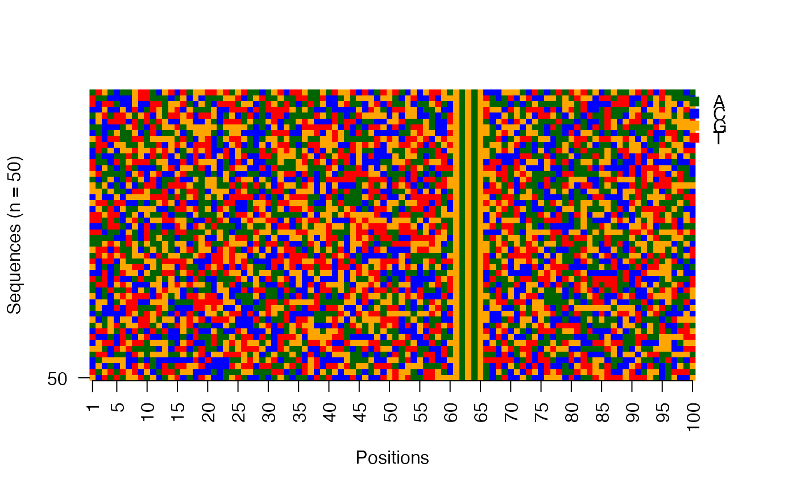

This function plots the collection of sequences as an image matrix.
viz_seqs_acgt_mat( seqs, pos_lab = NULL, xt_freq = min(length(pos_lab), 5), yt_freq = min(length(seqs), 100), col = c("darkgreen", "blue", "orange", "red"), save_fname = NULL, file_type = "PNG", f_width = 450, f_height = 900, f_units = "px" )
Arguments
| seqs | The sequences as a DNAStringSet object. |
|---|---|
| pos_lab | The labels to be used for the sequence positions. Default: Sequence positions are labeled from 1 to the length of the sequences. |
| xt_freq | The x-axis tick frequency. Expects a positive integer less than the length of the sequences. Default is 5. |
| yt_freq | The y-axis tick frequency. Expects a positive integer less than number of sequences. Default is 100 or. |
| col | A vector of four colors used for the DNA bases A, C, G, and T (in that order). |
| save_fname | Specify the filename (with extension) for saving the plot to disk. |
| file_type | Specify the file type, namely PNG, JPEG, TIFF. |
| f_width | Specify the width for the plot. This depends on the length of sequences. |
| f_height | Specify the height for the plot. This depends on the number of sequences. |
| f_units | Specify the units in which the height and width are given. |
Value
Nothing returned to the R interpreter.
See also
Other visualization functions:
plot_ggheatmap(),
plot_ggseqlogo(),
viz_bas_vec_heatmap_seqlogo()
Examples
res <- readRDS(system.file("extdata", "example_seqArchRresult.rds", package = "seqArchR", mustWork = TRUE)) # Image matrix of sequences in the input order viz_seqs_acgt_mat(seqs = seqs_str(res))# Image matrix of sequences ordered by the clustering from seqArchR use_seqs <- seqs_str(res, iter = NULL, cl = NULL, ord = TRUE) viz_seqs_acgt_mat(seqs = use_seqs) # Image matrix of sequences belonging to a single cluster use_seqs <- seqs_str(res, iter = 2, cl = 2) viz_seqs_acgt_mat(seqs = use_seqs) 